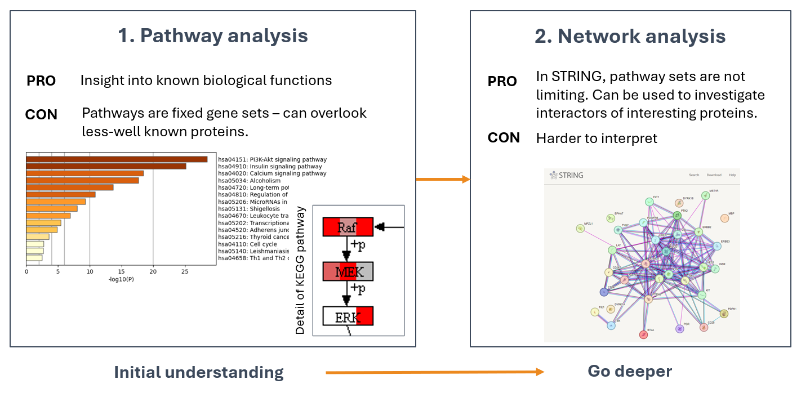
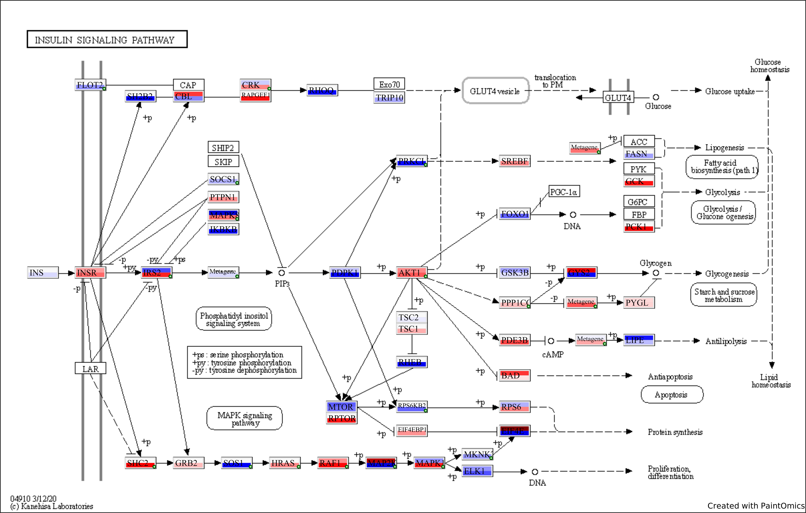
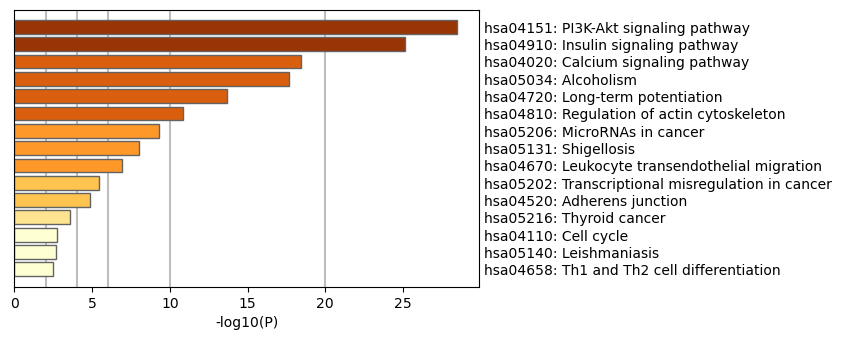
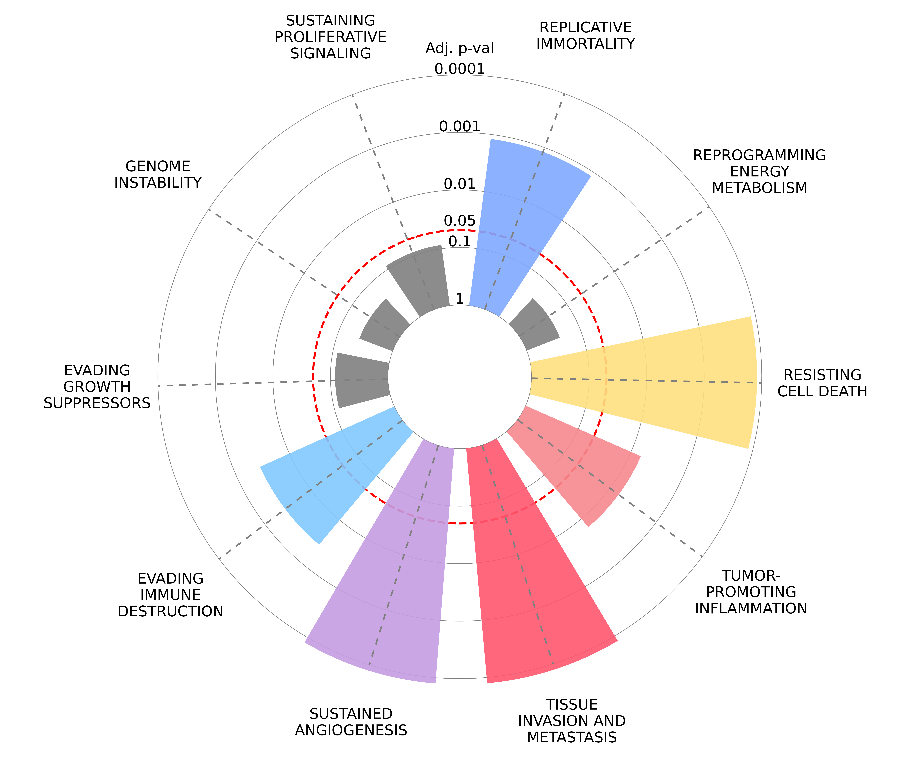

3. Further insights to PamDx data
The interpretation of peptides and kinases: which one is more insightful ?
We suggest to base further analysis of PamDx results on kinase data and not on peptide-level data.
- Peptide signal can be translated to protein signal (data provided in peptide enrichment) but interpreting peptides = proteins is oversimplification:
- the peptide signal is the sum of phosphorylation by different kinases on a 13mer peptide on the PamChip.
- The protein may not be present in lysate.
- Phosphorylation can have different outcomes (induction or inhibition of protein or other functions).
- The UKA results on the other hand, are directly suitable to input to signaling pathway or network analysis:
- they have a clear interpretation: positive FC = activation, negative = inhibition.
- Differential kinase activity has a better statistical underpinning than treating differential peptide phosphorylation as protein activity. (Specificity score is available for kinases and kinases can only be predicted if at least 3 phosphosites show consistent change.
- Since kinases are predicted, pre-selection of kinases with high specificity scores (> 0.7, or > 1, the latter is equivalent to p-value 0.1) should be done. We do not recommend to set stringent specificity score cutoff for pathway / network analysis. These analyses find functionally interacting kinases, which further pinpoints the most relevant ones and naturally filters out false positives. (If a kinase is not connected to any other kinase in a pathway or network analysis, it is likely to be false positive.)
I really can't use peptide signal?
You can decide to use peptide signal as a proxy for protein activity in certain cases. For example, some peptides may match to proteins which are not kinases and they are specifically linked to the research domain. Or, if you want to use autophosphorylation site which is a strong indicator that the kinase is there (although in this case the kinase should be predicted as well.) If you do use peptides translated to proteins, mention the simplifications in your publication.
Example of phosphosites on the same protein with different functions:
| ID | PSite | Residue | Function |
|---|---|---|---|
| AKT1_301_313 | 308 | T | required for full activity |
| AKT1_170_182 | 176 | Y | phosphorylation by TNK2 tethers AKT1 to plasma membrane |
Pathway and Network Analysis Are Complementary

Pathway Analysis Tools
Type of analysis:
- Overrepresentation Analysis: simple pathway analysis - input only your list of significant kinases
- EnrichR
- Metascape
- gProfiler
- Paintomics
- Hallmarks of cancer (human and mouse)
- Functional Class Scoring (e.g. GSEA): (R packages: gage, clusterProfiler, pathview)
Choose the pathway databases, e.g:
- KEGG (nice pathway figures but limited gene sets)
- Reactome (most recommended by us because of clear hiearchical structure and constant update)
- WikiPathways (nice pathway figures, but inconsistent pathway naming. Some diseases are only found here.)
- GO
- SignaLink very well curated db
- Hallmarks of Cancer
Pathway analysis types
| Overrepresentation (e.g. Metascape) | Functional class scoring (e.g. GSEA) |
|---|---|
| TLDR: More true positive, more false positive results. Tests whether the overlap of pathway members in the data is higher than by chance. Input: list of significant kinases (no fold change or p-value needed) |
TLDR: Less false positive, less true positive results. Detects pathways based on subtle, coordinated changes in pathway members. Input: fold change of kinases. |
| Pro: easy to use. | Pro: Can sensitively detect subtle, coordinated changes in pathway members. Pathway output is more reliable. |
| Con: Pre-filtering of features can introduce bias: 1) subtler changes might not be significant; 2) multiple testing bias (inflation of false positives) | Con: Can overlook pathways if members don’t show clear up-or downregulation. |
| ### Example outputs: |
Paintomics output: KEGG pathways colored by LFC (of 1+ comparisons)

Metascape output: top pathways:

Hallmarks of cancer

How to select the most relevant pathways? Can I use p-values from the pathway analysis?
There is no simple metric. Pathways usually share members, and a pathway that is relevant in one model may be irrelevant in another.
In addition, statistical tests do not consider how specific members are to a pathway. As a result, a pathway may receive a strong p-value even if only non-specific members are detected.
Therefore, we recommend assessing pathway relevance using biological domain knowledge rather than relying on p-values or combined scores.
Network analysis tools
Paste your gene list to STRING db.
To focus on the most validated part of the network, filter settings to make the interaction data more stringent. See interaction sources / evidence channels in the below table. You can also click on a link to see the source of interaction with publications.
| Evidence Channel | Type | Reliability | Key Strength |
|---|---|---|---|
| Experimental | Direct | 🥇 Highest | Proof of direct physical or genetic interaction. |
| Curated Databases | Direct | 🥇 Very High | Expert-validated functional association in pathways/complexes. |
| Gene Fusion | Genomic | 🥈 High | Strong evolutionary evidence for functional interaction. |
| Gene Neighborhood | Genomic | 🥈 High (Prok) / Low (Euk) | Evidence for operons and co-regulation (mainly in bacteria). |
| Gene Co-occurrence | Genomic | 🥈 Medium-High | Evidence for participation in the same pathway/system. |
| Co-expression | Functional | 🥈 Medium | Strong evidence for co-regulation and functional association. |
| Text mining | Literature | 🥉 Lower | High-level associative |
Network clustering also helps to understand the network. The clustering methods require an initial guess of how many clusters you expect - you can play with this setting. The clustered networks can help to see pathways.
Suggestions for validating results with Western blot
Select kinases that consistently appear with high Specificity Score in experiments with ≥ 3 replicates/condition (cell lines) or ≥ 6 replicates/condition (primary cell cultures / patient samples).
We recommend validating kinases over phosphosites because:
-
Targets may not be in their native form in the lysate
-
Phosphorylation at a site can have different functional outcomes
Western blot validation strategy:
-
Upregulated kinase: use antibodies specific for phosphosites that induce kinase activity
-
Downregulated kinase: use antibodies specific for phosphosites that inhibit kinase activity
Use Uniprot and PhosphoSitePlus to identify relevant phosphosites. PamGene can also help identify relevant phosphosites on request.
If direct kinase validation is not possible, validate downstream phosphosites activated by the kinase (PamDx can assist on request).
Questions?
For questions about experiment design, data analysis, validation, or anything else:
📧 support@pamgene.com